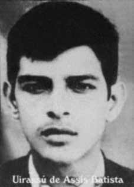

Uirassu
de Assis
Batista
CIRCUNSTÂNCIAS DA MORTE
O relatório do Ministério da Marinha entregue ao ministro da Justiça Maurício Corrêa, em 1993, registra que Valdir “foi morto em ABR/74”iv . Segundo depoimento de Margarida Ferreira Felix, prestado ao Ministério Público Federal (MPF), no dia 21/04/1974 os guerrilheiros Beto (Lucio Petit da Silva), Antônio (Antônio Ferreira Pinto) e Valdir (Uirassu de Assis Batista), estavam com as mãos amarradas e presos na casa do camponês Manézinho das Duas. Em outro depoimento colhido pelo MPF, de Adalgiza Moraes da Silva, consta que a declarante viu Uirassu e Lucio presos num helicóptero e que fingiram não reconhecer a declarante. Antônio Félix da Silva, outro camponês da região, informou ao MPF, em 06/07/2001, que no mesmo dia 21/04/1974 viu Antônio, Lucio e Uirassu amarrados com uma corda fina na sala da casa de Manézinho e que Uirassu aparentava estar ferido na perna ou com leishmaniose. Informou ainda que, na equipe militar que conduziu os guerrilheiros, reconheceu apenas que o Comandante era um tenente pára-quedista do Rio de Janeiro (Arquivo Nacional, Tais Morais, BR_DFANBSB_VAY_0083_d, p. 72). De acordo com relatório do Centro de Informações do Exército (CIE), de 1975, o nome de Uirassu consta numa lista de guerrilheiros do Araguaia como morto em 29/04/1974 (Arquivo Nacional, SNI: BR_DFANBSB_V8_AC_ACE_54730_86_002). Segundo o requerimento de Aidinalva Dantas Batista, mãe de Uirassu, solicitado à Comissão Especial de Mortos e Desaparecidos Políticos, a página 251 do livro Guerrilha no Araguaia do Coronel Pedro Corrêa Cabral, afirma que o corpo de Uirassú foi depositado, na época de sua morte, na Serra das Andorinhas, entre Xambioá (TO) e São Geraldo do Araguaia (PA) (Arquivo Nacional: Comissão Especial de Mortos e Desaparecidos Políticos: BR_DFANBSB_AT0_0077_0004). Nas fichas militares divulgadas pelo jornal O Globo, no dia 28/04/1996, o nome de Valdir (Uirassu) consta como morto em 11/01/1974, na localidade de Brejo Grande, no sudeste do Pará. Entretanto, esta informação encontra-se riscada na ficha de Uirassu, o que pode indicar um erro na produção original do documento.
The report from the Ministry of the Navy delivered to the Minister of Justice Maurício Corrêa, in 1993, records that Valdir “was killed in APR/74”iv. According to a statement by Margarida Ferreira Felix, given to the Federal Public Ministry (MPF), on 04/21/1974 the guerrillas Beto (Lucio Petit da Silva), Antônio (Antônio Ferreira Pinto) and Valdir (Uirassu de Assis Batista), had their hands tied and were trapped in the house of peasant Manézinho das Duas. In another statement collected by the MPF, from Adalgiza Moraes da Silva, it is stated that the declarant saw Uirassu and Lucio trapped in a helicopter and that they pretended not to recognize the declarant. Antônio Félix da Silva, another peasant from the region, informed the MPF, on 07/06/2001, that on the same day, 04/21/1974, he saw Antônio, Lucio and Uirassu tied with a thin rope in the living room of Manézinho's house and that Uirassu appeared to be injured in the leg or suffering from leishmaniasis. He also reported that, in the military team that led the guerrillas, he only recognized that the Commander was a paratrooper lieutenant from Rio de Janeiro (Arquivo Nacional, Tais Morais, BR_DFANBSB_VAY_0083_d, p. 72). According to a report from the Army Information Center (CIE), from 1975, Uirassu's name appears on a list of Araguaia guerrillas who died on 04/29/1974 (Arquivo Nacional, SNI: BR_DFANBSB_V8_AC_ACE_54730_86_002). According to the request of Aidinalva Dantas Batista, Uirassu's mother, requested from the Special Commission on Political Dead and Missing, page 251 of the book Guerrilha no Araguaia by Colonel Pedro Corrêa Cabral, states that Uirassú's body was deposited, at the time of his death, in Serra das Andorinhas, between Xambioá (TO) and São Geraldo do Araguaia (PA) (Archive National: Special Commission on Political Deaths and Disappearances: BR_DFANBSB_AT0_0077_0004). In the military records published by the newspaper O Globo, on 04/28/1996, the name of Valdir (Uirassu) appears as having died on 01/11/1974, in the town of Brejo Grande, in the southeast of Pará. However, this information is crossed out in Uirassu's record, which may indicate an error in the original production of the document.
El informe del Ministerio de Marina entregado al Ministro de Justicia Maurício Corrêa, en 1993, registra que Valdir “fue asesinado en ABR/74”iv. Según declaración de Margarida Ferreira Felix, entregada al Ministerio Público Federal (MPF), el 21/04/1974 los guerrilleros Beto (Lucio Petit da Silva), Antônio (Antônio Ferreira Pinto) y Valdir (Uirassu de Assis Batista), fueron atados de manos y atrapados en la casa del campesino Manézinho das Duas. En otro comunicado recogido por el MPF, de Adalgiza Moraes da Silva, se afirma que el declarante vio a Uirassu y Lucio atrapados en un helicóptero y que fingieron no reconocer al declarante. Antônio Félix da Silva, otro campesino de la región, informó al MPF, el 6/07/2001, que el mismo día, 21/04/1974, vio a Antônio, Lucio y Uirassu atados con una cuerda delgada en la sala de la casa de Manézinho y que Uirassu parecía herido en una pierna o padecía leishmaniasis. También informó que, en el equipo militar que lideraba la guerrilla, sólo reconoció que el Comandante era un teniente paracaidista de Río de Janeiro (Arquivo Nacional, Tais Morais, BR_DFANBSB_VAY_0083_d, p. 72). Según un informe del Centro de Información del Ejército (CIE), de 1975, el nombre de Uirassu aparece en una lista de guerrilleros de Araguaia fallecidos el 29/04/1974 (Arquivo Nacional, SNI: BR_DFANBSB_V8_AC_ACE_54730_86_002). Según pedido de Aidinalva Dantas Batista, madre de Uirassu, solicitado a la Comisión Especial de Muertos y Desaparecidos Políticos, página 251 del libro Guerrilha no Araguaia del coronel Pedro Corrêa Cabral, afirma que el cuerpo de Uirassú fue depositado, en el momento de su muerte, en la Serra das Andorinhas, entre Xambioá (TO) y São Geraldo do Araguaia (PA) (Archivo Nacional: Comisión Especial sobre Muertes y Desapariciones Políticas: BR_DFANBSB_AT0_0077_0004). En los registros militares publicados por el diario O Globo, el 28/04/1996, el nombre de Valdir (Uirassu) aparece como fallecido el 11/01/1974, en la localidad de Brejo Grande, en el sureste de Pará. Sin embargo, esta información está tachada en el expediente de Uirassu, lo que puede indicar un error en la producción original del documento.